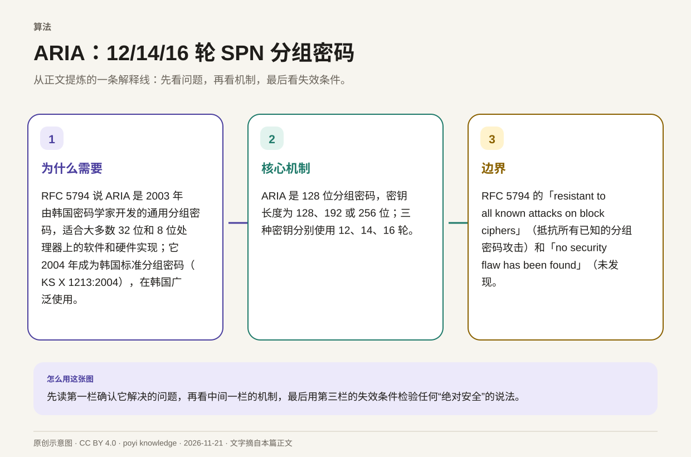
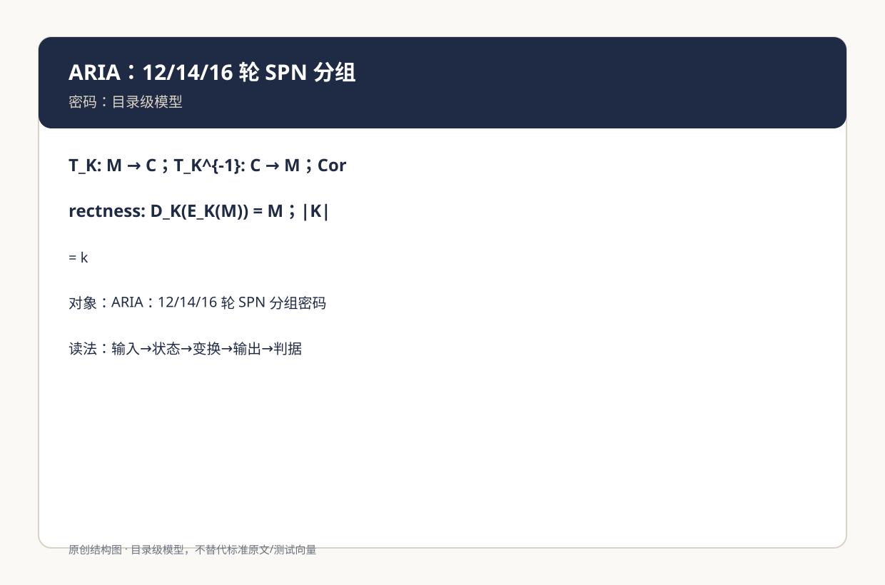

原理与机制
算法：ARIA 韩国分组密码（ARIA）。ARIA 是 128 位分组密码，密钥长度为 128、192 或 256 位；三种密钥分别使用 12、14、16 轮。它是 SPN（替换-置换网络）结构：奇数轮使用 FO，偶数轮使用 FE，最后一轮只做 SL2 替换和两次密钥异或。以 128 位密钥（12 轮）为例，加密过程是：
P1 = FO(P, ek1)
P2 = FE(P1, ek2)
P3 = FO(P2, ek3)
P4 = FE(P3, ek4)
P5 = FO(P4, ek5)
P6 = FE(P5, ek6)
P7 = FO(P6, ek7)
P8 = FE(P7, ek8)
P9 = FO(P8, ek9)
P10 = FE(P9, ek10)
P11 = FO(P10, ek11)
C = SL2(P11 XOR ek12) XOR ek13
192 位密钥用 14 轮：第 1 到第 13 轮交替 FO/FE，最后一轮是 C = SL2(P13 XOR ek14) XOR ek15。256 位密钥用 16 轮：第 1 到第 15 轮交替 FO/FE，最后一轮是 C = SL2(P15 XOR ek16) XOR ek17。解密使用同一过程，只把加密轮密钥 ek 换成解密轮密钥 dk。```text
FO(D, RK) = A(SL1(D XOR RK))
FE(D, RK) = A(SL2(D XOR RK))
SL1 对 16 个字节循环使用 SB1、SB2、SB3、SB4；SL2 循环使用 SB3、SB4、SB1、SB2：
```text
SL1: y0=SB1(x0) y1=SB2(x1) y2=SB3(x2) y3=SB4(x3) ...y15=SB4(x15)
SL2: y0=SB3(x0) y1=SB4(x1) y2=SB1(x2) y3=SB2(x3) ...y15=SB2(x15)
SB1、SB2、SB3、SB4 是四个 8 位 S-box，各 256 项。SB3 和 SB4 分别是 SB1 和 SB2 的逆函数，因此 SL2 是 SL1 的逆。规范给出的样例是 SB1(0x23)=0x26、SB4(0xEF)=0xD3。扩散层 A 对 16 个字节做固定异或组合：
y0 = x3 ^ x4 ^ x6 ^ x8 ^ x9 ^ x13 ^ x14
y1 = x2 ^ x5 ^ x7 ^ x8 ^ x9 ^ x12 ^ x15
y2 = x1 ^ x4 ^ x6 ^ x10 ^ x11 ^ x12 ^ x15
y3 = x0 ^ x5 ^ x7 ^ x10 ^ x11 ^ x13 ^ x14
y4 = x0 ^ x2 ^ x5 ^ x8 ^ x11 ^ x14 ^ x15
y5 = x1 ^ x3 ^ x4 ^ x9 ^ x10 ^ x14 ^ x15
y6 = x0 ^ x2 ^ x7 ^ x9 ^ x10 ^ x12 ^ x13
y7 = x1 ^ x3 ^ x6 ^ x8 ^ x11 ^ x12 ^ x13
y8 = x0 ^ x1 ^ x4 ^ x7 ^ x10 ^ x13 ^ x15
y9 = x0 ^ x1 ^ x5 ^ x6 ^ x11 ^ x12 ^ x14
y10 = x2 ^ x3 ^ x5 ^ x6 ^ x8 ^ x13 ^ x15
y11 = x2 ^ x3 ^ x4 ^ x7 ^ x9 ^ x12 ^ x14
y12 = x1 ^ x2 ^ x6 ^ x7 ^ x9 ^ x11 ^ x12
y13 = x0 ^ x3 ^ x6 ^ x7 ^ x8 ^ x10 ^ x13
y14 = x0 ^ x3 ^ x4 ^ x5 ^ x9 ^ x11 ^ x14
y15 = x1 ^ x2 ^ x4 ^ x5 ^ x8 ^ x10 ^ x15
A 是对合，即 A(A(x))=x。例如 A 把 000102030405060708090A0B0C0D0E0F 映射为 03020100050407060A0B08090C0D0E0F。密钥调度把主密钥 K 写成 KL||KR：KL 是最左 128 位，KR 是剩余位右侧补零到 128 位。128 位密钥时 KR 为 0，192 位密钥时 KR 的低 64 位为 0，256 位密钥时 KR 是完整的右 128 位。然后定义四个 128 位中间值：
W0 = KL
W1 = FO(W0, CK1) XOR KR
W2 = FE(W1, CK2) XOR W0
W3 = FO(W2, CK3) XOR W1
CK1、CK2、CK3 从三个常数中按密钥长度选取：
C1 = 517CC1B727220A94FE13ABE8FA9A6EE0
C2 = 6DB14ACC9E21C820FF28B1D5EF5DE2B0
C3 = DB92371D2126E9700324977504E8C90E
128 位：CK1=C1, CK2=C2, CK3=C3
192 位：CK1=C2, CK2=C3, CK3=C1
256 位：CK1=C3, CK2=C1, CK3=C2
加密轮密钥 ek1..ek17 由 W0..W3 的 128 位左右循环移位与异或得到：
ek1 = W0 ^ (W1 >>> 19) ek2 = W1 ^ (W2 >>> 19)
ek3 = W2 ^ (W3 >>> 19) ek4 = (W0 >>> 19) ^ W3
ek5 = W0 ^ (W1 >>> 31) ek6 = W1 ^ (W2 >>> 31)
ek7 = W2 ^ (W3 >>> 31) ek8 = (W0 >>> 31) ^ W3
ek9 = W0 ^ (W1 <<< 61) ek10 = W1 ^ (W2 <<< 61)
ek11 = W2 ^ (W3 <<< 61) ek12 = (W0 <<< 61) ^ W3
ek13 = W0 ^ (W1 <<< 31) ek14 = W1 ^ (W2 <<< 31)
ek15 = W2 ^ (W3 <<< 31) ek16 = (W0 <<< 31) ^ W3
ek17 = W0 ^ (W1 <<< 19)
12、14、16 轮分别需要 13、15、17 个轮密钥，因为最后一轮多一次密钥异或。解密轮密钥由 ek 反序得到，中间项再应用 A：
dk1 = ek(n+1)
dk2 = A(ek n)
dk3 = A(ek n-1)
...dk n = A(ek2)
dk(n+1) = ek1

为什么重要
RFC 5794 说 ARIA 是 2003 年由韩国密码学家开发的通用分组密码，适合大多数 32 位和 8 位处理器上的软件和硬件实现；它 2004 年成为韩国标准分组密码（KS X 1213:2004），在韩国广泛使用，尤其是政府面向公众的服务，并在 2007 年被纳入 PKCS #11。韩国电子政务标准框架的开发指南在标准化动向一节也写明，ARIA 于 2004 年依据国家标准基本法被指定为国家标准，标准编号是 KS X 1213:2004。这与 RFC 5794 的叙述一致。RFC 5794 第 3 节说 ARIA 设计上能抵抗所有已知的分组密码攻击，并称比利时 K.U.Leuven 的 COSIC 组分析后没有发现安全缺陷。这是 2010 年 RFC 的评估，不是对全部攻击模型的形式化证明。
应用与实例
TLS：RFC 6209（2011 年 4 月，Informational）为 TLS 1.2（RFC 5246）定义 ARIA 密码套件，包括 CBC/SHA-2、GCM、椭圆曲线和 PSK 套件；它明确不包含 SHA-1 套件。RFC 8446（TLS 1.3）附录 B.4 只定义 5 个基于 AEAD 的套件（AES-128-GCM、AES-256-GCM、ChaCha20-Poly1305、AES-128-CCM、AES-128-CCM-8），没有 ARIA 套件；本文不声称 ARIA 可用于 TLS 1.3。OID：RFC 5794 附录 B 给出 ARIA 的 ASN.1 OID 模块，包括 id-sea 以及 128/192/256 位密钥的 ECB、CBC、CFB、OFB、CTR、CMAC、OCB2、GCM、CCM 和密钥包装等模式标识。这些标识说明 ARIA 不只是一种论文算法，也有可引用的模式级对象标识。测试向量：RFC 5794 附录 A 给出三组向量，明文都是 00112233445566778899AABBCCDDEEFF：
128 位密钥 = 000102030405060708090A0B0C0D0E0F
密文 = D718FBD6AB644C739DA95F3BE6451778
192 位密钥 = 000102030405060708090A0B0C0D0E0F1011121314151617
密文 = 26449C1805DBE7AA25A468CE263A9E79
256 位密钥 = 000102030405060708090A0B0C0D0E0F101112131415161718191A1B1C1D1E1F
密文 = F92BD7C79FB72E2F2B8F80C1972D24FC
128 位密钥的附录 A.1 还列出 W0..W3、ek1..ek13 和 P1..P11，因此它同时校验密钥调度和轮函数，而不只是最终密文。本文的实现逐项核对这组中间值：例如 W0=000102030405060708090A0B0C0D0E0F、W1=2AFBEA741E1746DD55C63BA1AFCEA0A5、ek1=D415A75C794B85C5E0D2A0B3CB793BF6、P1=7FC7F12BEFD0A0791DE87FA96B469F52、P11=E7E0D2457ED73D23D481424095AFDCA0。

边界与攻击面
RFC 5794 的「resistant to all known attacks on block ciphers」（抵抗所有已知的分组密码攻击）和「no security flaw has been found」（未发现安全缺陷）是 2010 年文档中的设计者评估，不是对全部攻击模型的形式化证明，也不保证未来不会出现更好的分析方法。本文不把它们扩大成绝对安全结论，也不引用未经本文核实的攻击论文来宣称 ARIA 已被攻破。ARIA 的部署位置需要区分：它是韩国国家标准算法，在韩国政府面向公众的服务中有明确使用记录，并在 2007 年被纳入 PKCS #11；RFC 6209 为 TLS 1.2 定义 ARIA 套件，但该 RFC 是 Informational，TLS 1.3 没有 ARIA 套件。那是韩国的国家标准和 2007 年一次纳入 PKCS #11 的记录，不等于在所有最新协议中默认可用。实现层面，本文的教学实现按字节查 SB1..SB4 并做 16 字节异或，不是常量时间实现，缓存和时序可能泄露与密钥相关的访问模式；它不生成密钥，不实现工作模式、IV 管理、填充、完整性保护或侧信道防护，不能用于保护真实数据。ARIA 只定义分组密码，协议层必须自己处理这些事项。
历史与背景
ARIA 由韩国密码学家在 2003 年开发，2004 年成为韩国标准分组密码算法 KS X 1213:2004，并在韩国广泛用于政府面向公众的服务；2007 年它被纳入 PKCS #11。RFC 5794 在 2010 年 3 月以 Informational 类别发表，属于 Independent Submission，作者是 J.Lee、J.Lee、J.Kim、D.Kwon 和 C.Kim（NSRI）。RFC 6209 在 2011 年 4 月以 Informational 类别为 TLS 1.2 增加 ARIA 套件，包括 CBC/SHA-2、GCM、椭圆曲线和 PSK 类；RFC 8446 在 2018 年定义 TLS 1.3 时只保留 5 个 AEAD 套件，没有 ARIA。本文的 ARIA 实体只指这一种 128 位分组密码；AES、Camellia、SEED 是其他实体，TLS 和 PKCS #11 是使用 ARIA 的协议或接口，RFC 5794 是算法规范，不是整个协议栈。
逐步示例与核验
复算示例
取标准或公开测试向量中的一组参数，按“输入—执行—输出”记录：先写出该条目的形式式 (C=E_K(P;r),\qquad P=D_K(C))；再按规范顺序执行每一步，最后把输出与独立实现或标准向量逐字节对照。若没有可引用的数值向量，就只记录结构步骤，不伪造输出。
参考出处
- Wikipedia search entry for ARIA 韩国分组密码. https://zh.wikipedia.org/w/index.php?search=ARIA%20%E9%9F%A9%E5%9B%BD%E5%88%86%E7%BB%84%E5%AF%86%E7%A0%81
- Handbook of Applied Cryptography (Menezes, van Oorschot, Vanstone). https://www.cacr.math.uwaterloo.ca/hac/